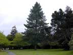
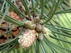
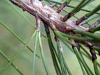
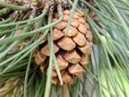
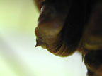
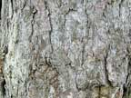

Western yellow pine
Pinus ponderosa
Other names
Blackjack pine, ponderosa pine
Description
Tree up to 70 metres tall (world’s second largest pine). Deeply fissured bark, dark reddish or yellowish brown. Needles in groups of three, stout, rigid and up to 25cm long. Branches droop but ascend at tips. Flowers in unisexual cones which are oval, up to 20cm by 10 cm with a minute prickle on the scale.
Similar plants
Distribution
Native of Northwest America, along Rocky Mountain range. In New Zealand usually planted in gardens and parks. Sometimes escaped from cultivation, but poorly adapted to New Zealand conditions and susceptible to many diseases.
Toxin
Isocupressic acid and a mixture of abietane type acids has also been isolated which are found in the needles only. The exact mechanism of action is not known. Possibly related to binding of isocupressic acid to alpha 2 adrenergic receptors or by interfering with oestrogen metabolites causing vasoconstriction of the uterus. Anti oestrogenic effects (could cause abortion); appears to affect cattle but not ewes if ingested in the last half of gestation. Dangerous in all seasons, especially in winter due to shortage of other feeds.
Species affected
Cattle.
Clinical signs acute
Abortion (especially late in gestation). Retained placenta, oedema of vulva and udder, septic metritis and peritonitis. If ingested very late in pregnancy weak calves are born prematurely. Rarely fatal to adult animals unless large quantities are ingested.
Clinical signs chronic
Post mortem signs
No distinct lesions; aborted foetus and unwell cows.
Diagnosis
No specific tests; history and presence of pine on farm, needles in stomach.
Differential diagnosis
Macrocarpa poisoning, Neospora caninum, nitrate poisoning, anti oestrogenic plants (eg red clover), corticosteroid administration (iatrogenic).
Treatment
Symptomatic care. Use of antihistamines has been reported..
Prognosis
Poor for calf (unless very late in gestation). Good for cow.
Prevention
Avoid access to trimmings or downed branches particularly during the last trimester.
References
Conner H.E. The Poisonous Plants In New Zealand. 1992. GP Publications Ltd, Wellington
Cooper M R, Johnson A W. Poisonous Plants and Fungi in Britan: Animals and Human Poisoning. Her Majesty’s Stationary Office. London. 1998
Gardner, DR. Molyneux RJ. James, LF. Panter KE, and Stegelmeier, BL. (1994). Ponderosa pine needle induced abortion in beef cattle: Identification of isocupressic acid as the principle active compound. Journal of Agriculture Food Chemistry. 42:756 761.
Parton K, Bruere A.N. and Chambers J.P. Veterinary Clinical Toxicology, 2nd ed. 2001. Veterinary Continuing Education Publication No. 208
Stevenson, A.H., James, L.F. and Call, J.W. (1972). Pine needle (Pinus ponderosa) induced abortion in range cattle. Cornell Vet. 62:519 524.
 tree |
 |
|
|
 |
|
|
|
 |
 spike on cone scale |
|
|
 |
|
|